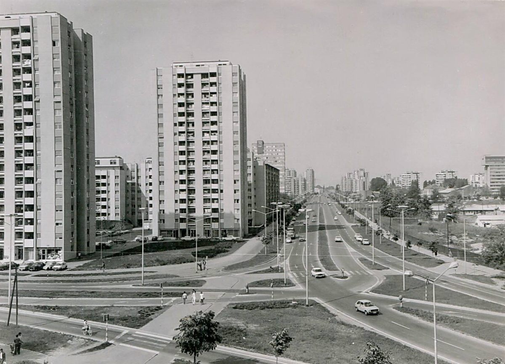
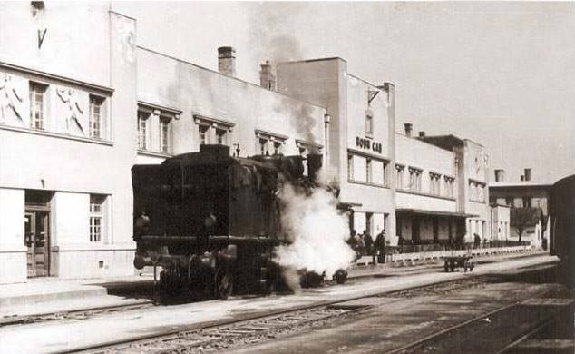
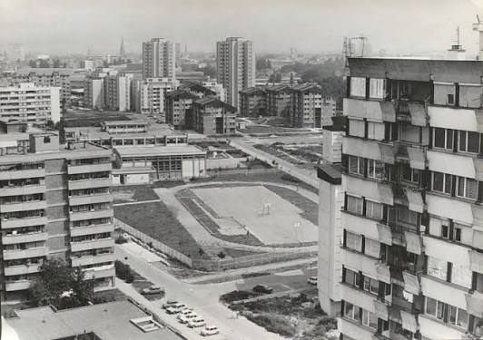

NAŠ KRAJ · ISTORIJA
Liman 2 - od dunavske močvare do komšiluka koji ima svoj karakter
Priča o jednom novosadskom kraju, njegovim ulicama, zgradama, ljudima i uspomenama koje se prenose s generacije na generaciju.
Pre nego što su nikle zgrade - grad na pesku
Danas je teško zamisliti da je prostor na kojem se nalazi Liman 2 nekada bio sasvim drugačiji. Umesto višespratnica, asfaltiranih ulica, škola i igrališta, ovde su se nalazile bare, peskoviti sprudovi, vrbe, livade i močvarno zemljište koje je Dunav oblikovao svojim izlivanjem.
Ime našeg kraja to i danas čuva. Reč "liman" potiče od grčke reči za zaliv ili pristanište, a kod nas su se tako zvala mirna jezera i močvare sa sprudovima, nastale u rukavcima Dunava.
Novi Sad je imao dva limana. Mali Liman bio je na prostoru današnjeg centra i Dunavskog parka, a do početka tridesetih godina 20. veka tu su bile bare, sprudovi, vrbaci i livade. Veliki Liman zabeležen je još 1764. godine i prostirao se od Futoške šume prema današnjim gradskim ulicama. Dunav je ovaj teren redovno plavio i nanosio pesak i mulj. Kako kaže Istorijski arhiv grada, Liman "počiva na nekadašnjoj zabarenoj ravni Dunava".

Pruga tamo gde je danas Bulevar
Godine 1881. počela je gradnja pruge Budimpešta-Subotica-Novi Sad-Zemun-Beograd. Njen nasip presekao je Veliki Liman, a prvi voz stigao je u Novi Sad 1883. Kada idete Bulevarom cara Lazara, idete trasom te nekadašnje pruge. Stara železnička stanica radila je do 1964, kada je stanica preseljena, a njena zgrada je srušena.

Trčika na Fruškogorskoj
Od 1924. do 1937. godine Fruškogorskom ulicom, koja je danas granica našeg Limana 2, vozio je mali voz "Trčika" i vozio Novosađane na Štrand. Imao je lokomotivu i tri vagona i bio je omiljeni letnji prevoz. Gradom su vozili i električni tramvaji, od 1911. do 1958, kada su ih zamenili autobusi.
Kuće bez kanalizacije
Između dva rata gradska uprava je jeftino delila placeve za kuće na ovom prostoru. Naselje nije imalo kanalizaciju, a vodu se donosilo sa javnih česmi. Visoke podzemne vode i poplave bile su stalna briga. Međunarodni konkurs za regulacioni plan održan je 1936-1937, ali rat je zaustavio sve planove.
Od močvare do modernog naselja
Posle Drugog svetskog rata Novi Sad počinje ubrzano da se širi. Grad dobija nove urbanističke planove, a prostor uz Dunav postaje jedan od najvećih projekata stambene izgradnje.
Posle rata, od 1945, teren je nasipan peskom, a do 1955. ukucani su cevi i šipovi da bi zgrade bile stabilne na nekadašnjoj močvari. Krajem pedesetih i početkom šezdesetih nikle su prve tri stambene kule od po deset spratova i Poljoprivredni fakultet.
Prve velike stambene zgrade podignute su na Limanu 1, a zatim je izgradnja nastavljena prema Limanu 2, 3 i 4.
Liman 2 postaje deo velikog urbanističkog projekta kojim Novi Sad izlazi prema Dunavu. Umesto spontanog širenja grada, ovde se planiraju stambeni blokovi, široke ulice, škole, prodavnice, igrališta i zelene površine.
To je bio grad u gradu - naselje zamišljeno da svojim stanovnicima pruži gotovo sve što im je potrebno za svakodnevni život.
Ostao je pesak ispod nas. Ostala je i Fruškogorska, kojom je nekad zviždala Trčika. Ostao je Bulevar kojim je nekad prolazio voz. Ostalo je i ime, koje i dalje kaže da smo kraj uz vodu.

Betonski blokovi, dvorišta i Bronks
Liman 2 dobija prepoznatljiv izgled. Zgrade se grupišu u stambene blokove, a između njih ostaju dvorišta, drveće, igrališta i prolazi.
Nije se život odvijao samo u stanovima. Dvorišta postaju mesta susreta, dečje igre, razgovora i komšijskih druženja.
Jedan od najprepoznatljivijih delova Limana 2 jeste čuveni Bronks - naziv koji je među stanovnicima odavno postao mnogo više od oznake za stambeni blok.
Sivi betonski kvart dobio je nadimak po njujorškom Bronksu, a vremenom je postao deo lokalnog identiteta. Kao i mnoga mesta koja imaju svoj nadimak, Bronks je dobio i sopstvenu mitologiju: priče o odrastanju, prijateljstvima, nestašlucima i generacijama koje su tu provodile detinjstvo.
Na Limanu 2 ne postoji samo adresa. Postoji i ono čuveno: "Gde si? Kod Bronksa."
Škola, igralište, pijaca - svakodnevni život
Liman 2 nije nastao kao naselje spavaonica. Njegov razvoj pratio je stvaranje infrastrukture koja je omogućavala da ljudi ovde žive, rade, odgajaju decu i provode slobodno vreme. Škole, vrtići, prodavnice, igrališta i javni prostori postali su sastavni deo naselja.
Škola "Jovan Popović" zauzima posebno mesto u uspomenama mnogih generacija Limanaca. Za jedne je to mesto prvih školskih dana, za druge početak prijateljstava koja traju decenijama. Pročitaj priču o školi →
Limanska pijaca nije samo mesto za kupovinu. Ona je prostor susreta, razgovora i razmene informacija. Na pijaci se često sazna više o komšiluku nego na bilo kom društvenom mrežnom servisu.
A tu su i mali lokali, pekare, prodavnice i mesta na kojima se ljudi prepoznaju po imenu. Upravo te sitnice čine razliku između naselja i pravog komšiluka.
Kraj koji ima svoje legende
Svaki novosadski kvart ima svoje priče. Liman 2 ima ih na pretek.
Neko pamti Orfej, neko druženja kod Tašte, neko prvi izlazak, neko utakmice, neko igrališta na kojima se provodilo više vremena nego kod kuće.
Neke stvari su nestale, neke su promenile izgled, a neke su opstale uprkos vremenu.
Generacije su se smenjivale, ali su ostale iste navike: pozdravljanje poznatih ljudi na ulici, razgovori ispred zgrade, deca koja se igraju u dvorištima i komšije koje znaju ko se doselio, ko je otišao i kome treba pomoć.
Liman 2 nikada nije bio samo skup zgrada. On je bio i ostao mreža ljudi, odnosa i uspomena.
Dunav - granica koja je zapravo veza
Jedna od najvećih prednosti Limana 2 jeste blizina Dunava. Štrand, kej, šetališta i pogled na reku predstavljaju deo svakodnevnog života. Dunav je mesto za šetnju, rekreaciju, beg od gradske gužve i predah od svakodnevnih obaveza.
Upravo blizina reke daje Limanu poseban karakter. U jednom trenutku nalaziš se među zgradama i ulicama, a već nekoliko minuta kasnije možeš biti uz vodu.
To je jedna od stvari zbog kojih Liman 2 mnogi smatraju posebnim mestom za život. O plaži i najstarijem komšiji na keju pišemo posebno: Štrand i Veslački klub "Danubius 1885".
Liman 2 danas - između prošlosti i budućnosti
Danas Liman 2 živi u vremenu velikih promena. Stare zgrade i dalje čuvaju uspomene na vreme kada je naselje nastajalo, ali se menja način života. Automobili zauzimaju sve više prostora, zelene površine postaju predmet rasprava, a građani sve češće moraju da se organizuju kako bi zaštitili ono što smatraju važnim za svoj kraj.
Ipak, Liman 2 ima nešto što se ne može izgraditi urbanističkim planom - ljude koji su spremni da se angažuju. Komšijske inicijative, akcije uređenja, kulturni događaji, razgovori i zajedničko rešavanje problema pokazuju da naselje nije izgubilo svoj karakter.
Kada se komšije okupe oko zajedničkog cilja, Liman 2 prestaje da bude samo geografska tačka. Postaje zajednica.
Liman 2 nije samo mesto stanovanja
Možda je upravo to najveća vrednost ovog naselja. Liman 2 je mesto gde su mnogi odrasli, gde su se stvarala prijateljstva, gde su generacije učile, igrale se, zaljubljivale i gradile svoje živote.
Za nekoga je to Bronks. Za nekoga školsko dvorište. Za nekoga pogled sa terase. Za nekoga Štrand, pijaca ili klupa ispred zgrade.
A za sve njih, Liman 2 je deo Novog Sada koji ima svoju priču. I ta priča još traje.
Liman 2 - naš kraj, naše priče, naš komšiluk.
Sećate se stare samoposluge, kioska, bioskopa, igrališta ili kafane kojih više nema? Pošaljite nam ime mesta, otprilike godine i jednu rečenicu sećanja, a ako imate i fotografiju, još bolje. Od vaših priča napravićemo nastavak ovog teksta.
Pošalji fotografiju ili sećanje